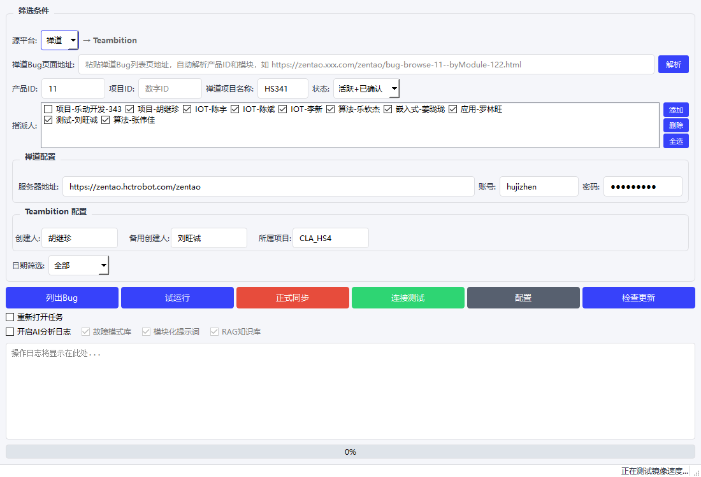
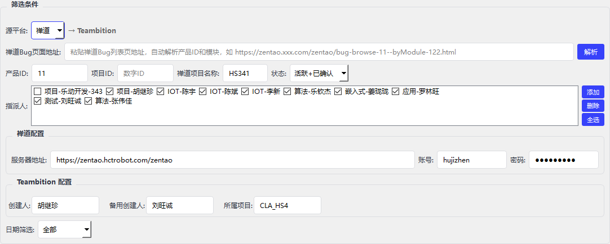
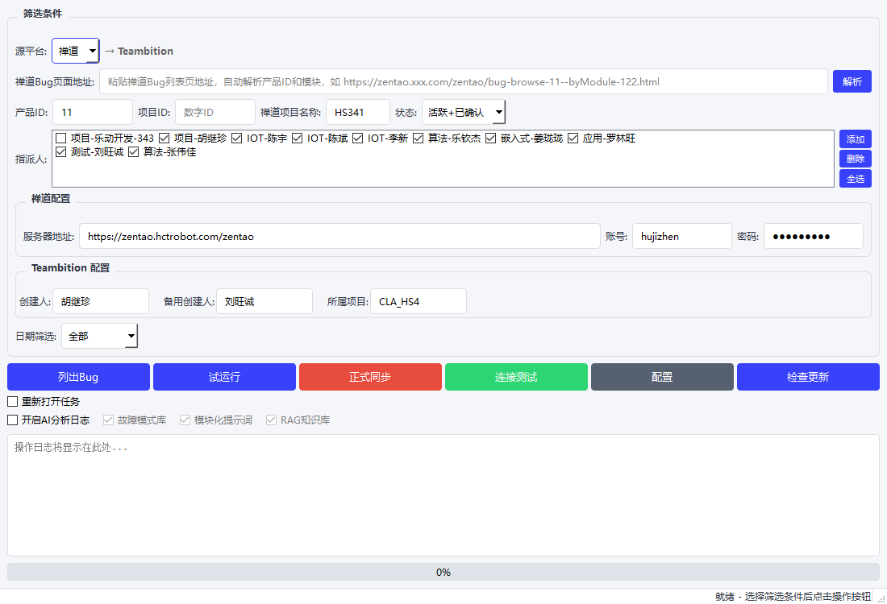
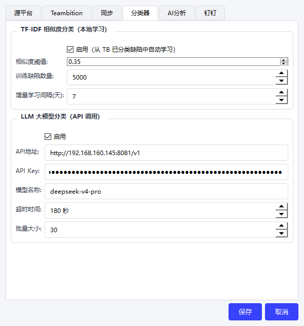

把禅道 Bug 一键同步到 Teambition
所有配置都在主界面直接填，不用进任何子菜单：

| 区域 | 填什么 |
|---|---|
| 禅道配置 | 服务器地址、登录账号、密码 |
| Teambition 配置 | 创建人、所属项目 |
| 筛选面板 | 来源URL、产品、状态、指派人、日期 |
在浏览器打开禅道 Bug 列表页 → 复制地址栏 URL → 粘贴到「来源URL」→ 点「解析」。产品ID、模块全部自动填好，不会出错。

解析完成后微调一下状态（一般选「活跃」），其他留空即可。需要过滤指派人时点「添加」，按 部门-姓名 格式填写（部门手写，姓名填禅道里的指派人名称，如 IOT-陈斌）。
按下面顺序点四个按钮：
确认禅道和 Teambition 都能连通。弹窗提示成功即可下一步。
看看筛选条件会匹配到哪些 Bug。不会改任何数据，放心点。
模拟同步，预览哪些会新建、哪些会跳过。
实际在 Teambition 创建/更新任务。同步期间不要关窗口。

勾选主界面上的「重新打开任务」开关后，同步时会自动检测：如果禅道 Bug 仍然是活跃状态，但对应的 Teambition 任务已被关闭，工具会自动将任务重新打开并同步最新的评论和附件。
勾选「开启AI分析日志」后，同步完成会自动从 DRC 日志服务器下载设备日志，调用大模型分析故障原因，并将分析结果写入 Teambition 任务评论。
其下的三个子开关可根据需要开启：

LLM API 地址填写：http://192.168.160.145:8081，API Key 从管理员处获取。
| 按钮 | 作用 | 会改数据？ |
|---|---|---|
| 测试连接 | 验证账号密码是否正确 | 不会 |
| 列出缺陷 | 查看符合条件的 Bug 列表 | 不会 |
| 试运行 | 模拟同步，预览结果 | 不会 |
| 正式同步 | 真实创建 TB 任务、上传附件 | 会！ |
Q: 连接测试失败？
A: 检查服务器地址是否正确（不要多空格或漏掉路径）、账号密码能否登录禅道。
Q: 同步后 TB 没看到新任务？
A: 看日志输出 — 如果显示「跳过-重复」，说明该 Bug 之前已同步过，去重机制避免了重复创建，可在 TB 中搜索 【禅道+编号】 找到已有任务。
Q: 任务重复了怎么办？
A: 同步靠标题里的 【禅道xxxxx】 标注来识别已有任务，不要手动删这个标签。
Q: 配置想重填？
A: 主界面上直接改就行，改了自动保存。
智能缺陷管理平台 v1.6 · 快速上手指南 · 2026